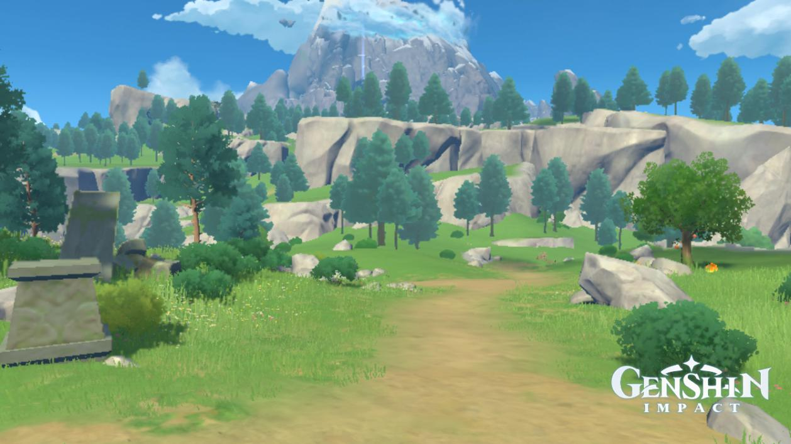

Mondstadt

Mondstat is the Anemo region in the game. It is where all players start and are introduced to the game and
its various mechanics. Mondstadt can be split into other areas such as Mondstadt City, Cider Lake, Falcon
Coast, Cape Oath, Dawn Winery, Springvale, Thousand Winds Temple and Dragon Spine. Mondstadt in game is
based on Germany
in the real world having similar architecture
and geography. Mondstadt is known as the City of Freedom where the citizen are to express it and have fun.
Most citizens live free and by using the gift if wind from the Anemo Archon they use various gliders to fly
around. Mondstadt is also known for poetry and its wine industry run by Diluc being a popular supplier of
alchohol
across Teyvat. Mondstadt is home to Dvalin a dragon and somewhat pet of the Anemo Archon which in the story
is eventually helped by the traveller after being under control by the abyss. Mondstdat is also home to the
knights of favonious. These knights compose of characters like Outrider Amber, Cavalry Captain Kaeya and
Grandmaster Jean. Mondstadt has fought wars in the past, one to over throw the rulers of old Mondstadt and
reclaim their freedom!
Anemo Archon

This is Barbatos, the Anemo Archon of Mondstadt. He has the power to control the wind and he was the one
who
originally gave the power of flight to the birds and gave them the wind to fly on. Barbatos was not
always the Anemo Archon and took the
role
after the previous one passed. His true form is pretty far from human as it looks more like an apple
sized
fairy that has a circular body. He got this form as a memento of his bard friend who passed after the
war of
Old Mondstadt. Now Barbatos roams around in Mondstadt in his curren form as shown on the right. To hide
his
identity he goes by the name Venti and leads a normal life. Today Venti is best known as a bard who
performs on the streets of Mondstadt. He is also known for being a drunkard as he is usually hanging
around inside the tavern. After the Dvalin issue was ressolved Barbatos had his gnosis, somewhat like a
vision but holds great power, taken by a woman named La Signora, a fatui harbinger, after receiving a
heavy beating. Without
his gnosis he is quite weaker but still holds great power.
Geography and Regional Specialties

Mondstat's topography show us that it is mostly comprised of hills and valleys. There are a bunch of
plains
too and has only one forest in Wolvendom. There are not may beaches or mountains in Mondstadt but there
are many lakes and fields which embodies the freedom of open space. In mondstadt you can find their
regional specialties used to upgrade certain character. These are the Calla Lilies, Cecilias, Dandelion
Seeds, Philanemo Mushrooms, Small Lamp Grass, Valberries, Windwheel Asters and Wolfhook. These items can
be found in specific areas for example Wolfhook only spawning in Wolvendom and Pihilanemo Mushrooms in
Dawn Winery, Springvale and Mondstadt City.
Dragonspine
Dragonspine is one outlier of a sub region in Mondstadt as it was added later in the game (update 1.2).
It was introduced as a fresh area of Mondstadt and came in with many new puzzles and areas to explore.
Dragonspine is allso divided into sub areas such as the Entombed City, Skyfrost Nail, Starglow Cavern
and Wyrmrest Valley. Dargonspine is very different as it is the only one to include the sheer cold
effect which makes the traveler gradually colder and when the traveler is too cold they will start to
freeze to death. This area is one of the most dangerous as it requires the traveler to keep a watch on
their sheer cold bar. However, this area is home to some good resources and fine weapons.
Trivia
(Trivia was taken from the Genshin wiki)
- Mondstadt is inspired by mainly German culture as well as various other Northern European cultures.
- Many of Mondstadt's characters have German names or titles: Klee means "clover" in German. Fischl,
the Prinzessin der Verurteilung means "Princess of Condemnation". Albedo, the Kreideprinz means
"Prince of Chalk". Diona of Kätzlein bloodline means "Kitten" bloodline.
- Mondstadt considers its trademarks the Dandelion, Flight and Wine, being the very few things that
Mondstadt learned from the Wind Archon to build Mondstadt.
- Many characters wear gloves that have a different color on the palm compared to the back. This could
be because the palm-side is made from a different material which provides better grip. It appears to
be a fashion unique to Mondstadt